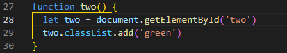

JavaScript, HTML, and CSS
Take a good look at yourself. You're a human (most likely) and as such, you are a very complex being composed of
interrelated parts. There is the skeleton, tendons and muscles, the intestinal and respiratory tracts, and so on. This
construction can be likened to HTML: not overly pleasing to the eye, perhaps, but very, very functional.
The outer layer of you consists, generally speaking, of skin, nails and hair. These are what CSS is responsible for in
the programming world: they make you look pretty. Some of these elements are encoded as deep as your genome: the eye,
skin and hair colour, for example. Additionally, in case you're not entirely happy with your looks, you can go to a
dedicated beautification programmer (hairdresser, barber, beautician) and change what you feel needs changing.
“Okay, then. But what about JavaScript?,” I hear you ask. Well, JavaScript in the computer world is analogical to the
inner workings of your body. Let's say your skin gets freckles in the summer, or you've got a pollen allergy that
makes you sneeze and your eyes get itchy. These are simple programs encoded in your skin, mucus membranes and nerve
endings that react in a preset way to a series of external stimuli. I guess someone should really work on refactoring
some of that code! But there are also highly beneficial parts of code that automate your breathing, rule your
automatic reaction to being burned, or remind you to eat and sleep when your energy is depleted. JavaScript programs
in computers can be likened to the myriad of little procedures and routines that run in our bodies without our
conscious thought.
Control flow and loops
Control flow is the order in which certain steps of a longer procedure are being executed. Sometimes it's very
straightforward, like directions you're given to get to a certain place: go straight for a hundred metres, then turn
left and follow the road for another 150 meters, then, after you pass a monument of a cricket on your right, turn
right. This is called a sequential flow: it has a simple sequence of steps and one follows the previous one. You
can't turn right by the cricket's monument if you haven't gotten there yet!
Sometimes, though, these instructions can get more complicated. You might be given two alternatives to get to your
desired location, and must choose between them - this is called a conditional flow. If you want to take the fastest
route, turn right on the next crossroads. If you want to take a scenic route, drive straight on the next crossroads.
The last type of control flow is a loop. Loops are usually a part of control flow that involve doing some steps
several times. Imagine you want to get to your destination as fast as you can, but you really, really want to visit
the kauri museum that's close by. You get off your fastest route, turning left on the crossroads, and after a few
more turns you get to the museum. You visit the museum, happily buy some souvenirs in the gift shop, and you go back
on the road. You return to the main road, retracing your earlier steps, and are ready to continue your main
procedure of getting to your destination. But wait! You suddenly realize that you forgot your wallet in the gift
shop! Now, you need to loop back, making the little detour to the museum for the second time. Let's just hope you
haven't forgotten anything else this time, or it might become an infinite loop…
DOM and DOM interaction
DOM brings to mind instant reminders of HAL, doesn't it? Fortunately, it is nothing as sinister. DOM is an
abbreviation for Document Object Model and it's an interface for us to play around the inner workings of web
documents using programming languages such as JavaScript or Python. DOM represents various elements of the websites
as objects and nodes, all structured into a logical tree of relationships. All elements of a web document are
represented in DOM's equivalent of a special family tree, where children have only one parent. A bit of
parthenogenesis goes on in there, but it's all the better for us, because with one parent it's much easier to
determine the scope of changes we want to introduce.

DOM's ultimate parent is window; but we are more interested in its child, the document. If you want to access a
website through the DOM, you'll most probably call document, like so:

With DOM, programmers can access, create and modify data in web documents.
Arrays and Objects
Objects and arrays are complex data types used to store a collection of data inside. The difference between them is
mainly one of accessibility. Objects are “things,” and the data inside them define them, or characterize them.
Objects have properties: key-value pairs which describe their various features. Imagine a Rubik's cube: it has
dimensions, height, width, and depth, it consists of 26 cubelets (not very intuitive, I expected 27, but makes sense
when you think about it!), in 6 different colors, etc. Rubik's cube is an object. To access properties of an object,
we usually use dot (.) and bracket [] notation.

Arrays, on the other hand, are more like an old library filing cabinet: they have indices (starting with 0!) at
which various items are stored. These items can also be objects, and they can be accessed through their index
number, added, modified or removed. You can fill arrays with various data types, strings, numbers, boolean values,
and so on. What's important, though, is that you cannot store different types of data in a single array. If you have
an array dedicated to ints, you cannot put boolean values into it. In other words, in your filing cabinet you should
not attempt to store eggs and Rubik's cubes at the same time.

Functions
Functions are blocks of code designed to perform specific tasks. In JS, function is defined by the keyword function
followed by the name of the function and parentheses () which enclose parameters of the function. The statements of
a function, the bits of code to be executed, are enclosed by curly brackets {}.
Functions are incredibly useful, because 1) they help us translate English into computerish by breaking big problems
into smaller, logical chunks, 2) they allow us to keep the code clean and without repetitions, as we can use and
reuse functions as many times as we need, and 3) they make the code more readable due to their highly visible
structure, delineated by the curly brackets and the keyword.